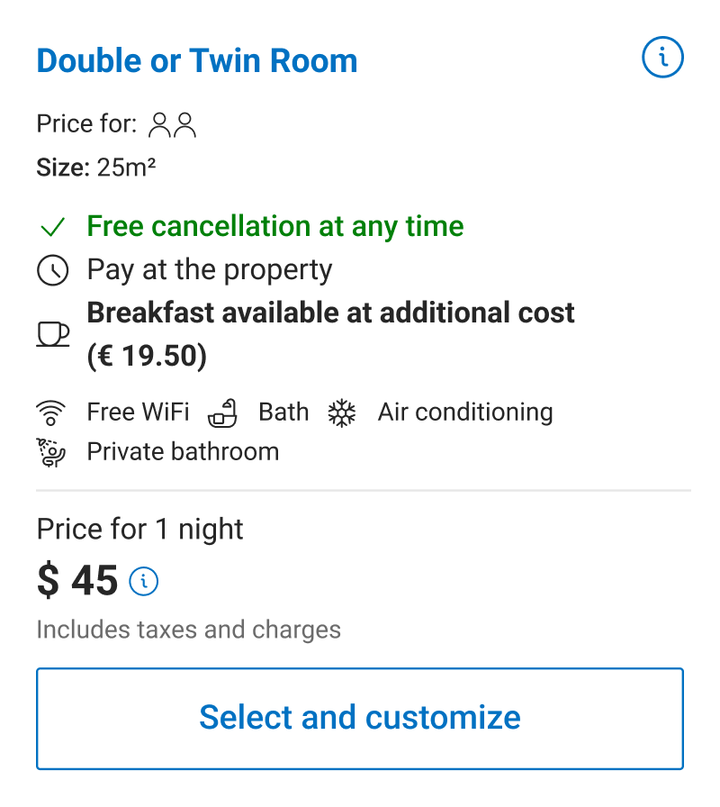
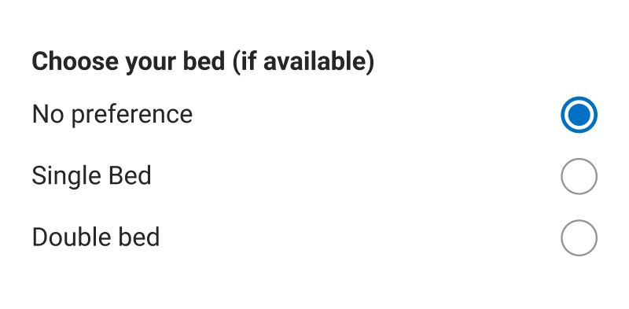

Process · Foundation
Four experiments that set the way.
Before designing a customisation flow, we needed to establish whether users would engage with preferences at all inside the room selection context.
Rather than building a full solution immediately, I structured a sequence of experiments that progressively increased intervention complexity — each one informing the next.
The initial card design made no mention of the possibility of customising the bed type, a key gap in communicating available options to the user.
UI also suffered from inconsistent font colour and weight usage, along with broader information architecture issues. These were known problems at the time, but given the project's scope and priorities, they were consciously set aside to focus on what mattered most.

The smallest testable hypothesis: not whether users would customise, but whether they noticed that options existed. I surfaced bed type options as static information on the room card — no selection mechanic. This isolated the impact of awareness alone.
Design challenge: bed configurations varied significantly. Presenting all options in a single line became unreadable for edge cases. I proposed displaying each option on its own line to preserve clarity across all configurations.
Building on positive awareness signals, we brought preference selection directly into the room card. Focus: bed type — the most requested room-level preference, already an established pattern on Desktop. This tested whether users would engage when given immediate, inline control.
+4,282 bookings with bed preferenceA key team discussion: what should the default selection be? I decided to make "No preference" the explicit default. Auto-selecting a bed type for every eligible room would have generated unintentional requests at scale, driving up partner workload and pushing down reply rates — directly undermining the review score improvement the feature was designed to produce.
Trade-off: lower apparent engagement to protect partner experience
As the room card began carrying more interactive elements, I restructured its IA: Static information (details, conditions, pricing) moved to the top. Interactive elements (preference selection, number of rooms, room CTA) moved to the bottom. Clear separation between reading and deciding.
+47 bookings · Structural foundation establishedArc 1 · 2022 · Proving the Concept
Two variants. Two competing risks.
I designed the first container experiment around a clear tension: protecting conversion versus maximising
customisation rate. User testing showed both performed well — 6 out of 8 users preferred the bottom sheet, as did I.
Both variants were built to accommodate multiple preferences simultaneously, future-proofed for a roadmap that had
not yet arrived.
Full screen
Start prototype ↗A single screen for all room customisation. This would boost engagement by surfacing options upfront, and keep all preferences visible at once.
To keep the screen height manageable, I chose drop-downs for each preference.
The tradeoff was scalability, as more rooms or preferences could make it harder to navigate, but data showed this was low-risk: 90% of reservations are for a single room, making a long list of rooms unlikely.
Two steps
Start prototype ↗I focused this proposal on splitting the customization flow across multiple screens, giving each room its own dedicated space with radio groups to display preferences clearly.
I kept customisation optional, driven by two concerns: conversion risk and scalability — a separate screen per room gave enough space to handle preferences individually as rooms grew.
The tradeoff was navigation, requiring users to move back and forth between screens, making it harder to see all selections at once.
Arc 2 · 2023 · Finding the Right Structure
The question shifted from what to how.
With the single-screen customiser proven commercially, the next question was flow structure. I evaluated 7 alternatives to single-screen and narrowed to two challengers, before pushing back on the PM's sequencing plan to test multi-step directly.
From the room list, users can tap "Select and customise" directly on a room card, or navigate into room details first, where a persistent "Select and customise" CTA sits at the bottom of the page. Both paths lead to the same destination.
The customisation screen opens as a bottom sheet overlaid on the current page. Tapping "Confirm" books the room with the selected preferences and advances directly to check-out.
Discarded · Room page complexity
Inspired by e-commerce product detail patterns — sequential screens guaranteeing exposure to each customisation and simplifying tap targets. Backed with a competitor analysis. Ruled out: the room detail page was already dense, and adding customisation would have made it unsustainable.
Discarded · Room page complexity
Each customisation in its own dedicated screen, inspired by airline booking flows. Internal momentum: the lead designer favoured this direction. The PM's plan was to improve single-screen first, then test multi-step.
I pushed back. Improvements to single-screen would not transfer to multi-step. We'd be optimising a foundation we already knew was going to be replaced. Testing multi-step in its raw state gave a cleaner read on whether the structural approach itself was valid.
Full-on · Validated the Microfunnel multi-step hypothesis